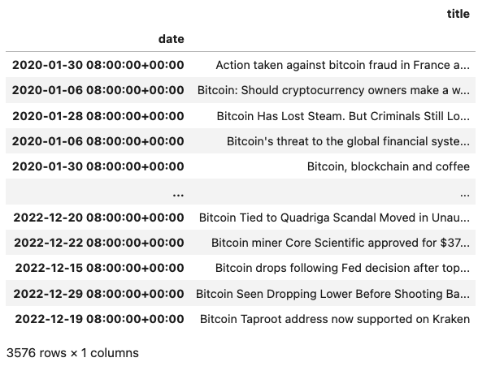
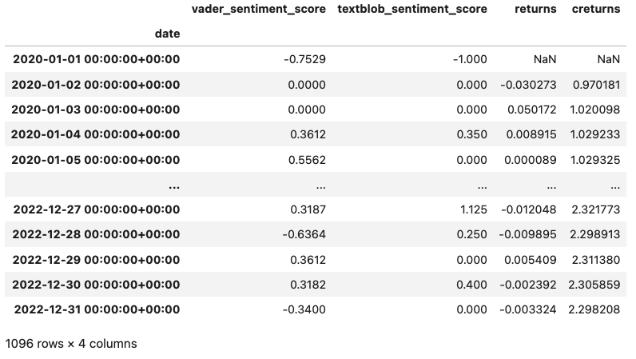
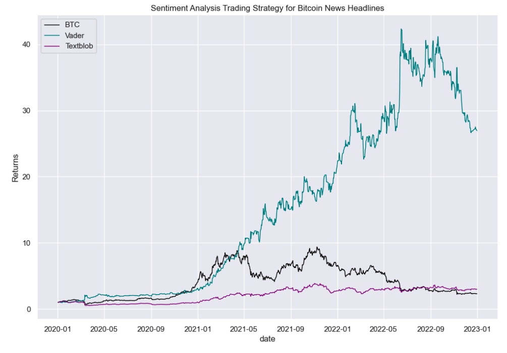

News Sentiment Analysis For Algorithmic Trading
Overview
This project involves collecting news articles, extracting and storing their titles and dates, and analyzing their sentiment. The sentiment scores are used to generate trading signals. The performance of the strategy is visualized to evaluate the effectiveness of various sentiment analysis methods.
Here is the a link to the code.
Getting the Data
A custom-built news retriever gathers articles by constructing URLs tailored to specific search queries and date ranges. The articles are parsed using Beautiful Soup to extract titles and dates. This information is stored in a pandas DataFrame, indexed by date, and saved as a CSV file for further processing.
Bitcoin news article headlines over 2 year period
Sentiment Analysis
The normalization of headlines involves several steps:
- Removing non-English characters and numbers.
- Expanding contractions.
- Tokenizing the text.
- Stemming the tokens.
- Eliminating stop words.
Sentiment scores are then calculated using two tools: VADER (Valence Aware Dictionary and sEntiment Reasoner) and TextBlob. VADER is a lexicon and rule-based sentiment analysis tool designed to handle sentiments expressed in social media. TextBlob is a simpler library providing an API for common natural language processing (NLP) tasks, including sentiment analysis, based on pattern library and text processing methodologies.
The sentiment scores from both tools are appended to the DataFrame. The data is resampled to a daily frequency, and corresponding market data, including daily asset returns and cumulative returns, is integrated into the DataFrame. Sentiment-based trading signals are generated based on these scores, influencing the strategy's returns calculations.
News article headlines sentiment scores, bitcoin returns and cumulative returns
Trading Strategy
- Long Position: Triggered by a sentiment score above zero, indicating a positive market outlook.
- Short Position: Triggered by a sentiment score below zero, indicating a negative market outlook.
- Neutral Position: Triggered by a sentiment score of zero, indicating no significant market sentiment.
Performance Visualization
The cumulative returns are visualized in a chart, comparing the performance between the VADER and TextBlob sentiment analysis methods. This visualization helps assess the effectiveness of each sentiment analysis technique in predicting market movements based on news sentiment and provides insights into the impact of news sentiment on market behavior over time.
Key Skills
Python, Web Scraping, Data Handling with pandas, Sentiment Analysis, Natural Language Processing (NLP), Algorithmic Trading Strategy Development, Data Visualization, API Integration, Performance Analysis